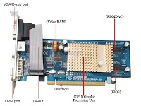
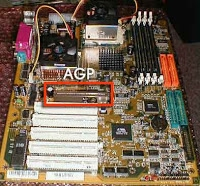
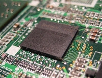
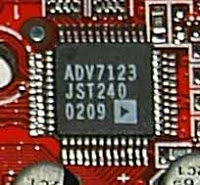

อินเตอร์เฟส (Interface) หรือระบบบัสของตัวการ์ด
เป็นส่วนที่ใช่เชื่อมต่อเข้ากับระบบบัสที่อยู่บนเมนบอร์ด มีลักษณธเป็นแถบทองแดงยื่นออกมาด้านข้างของตัวการ์ด ใช้เสียบลงบนช่องเสียบ (Slot) บนเมนบอร์ดที่เป็นชนิดเดียวกันกับตัวการ์ด ปัจจุบันการ์ดจอมีอินเตอร์เฟสให้เลือกใช้อยู่ 2 แบบคือ AGP และ PCI Express ซึ้งมีรายระเอียดดังนี้

AGP (Accelerated Graphic Port)
เป็นระบบบัสที่มีความถี่ในการทำงานที่ 66.6 MHz ด้วยความกว้างบัสขนาด 32 บิตมาตรฐานเริ่มต้นคือ AGP 1X ซึ่งให้ Bandowidth ที่ 266 MB/sec (โดยประมาณ) แต่สำหรับมาตรฐานล่าสุดที่ใช้งานกันอยู่ในปัจจุบันคือ AGP 8X ซึ่งให้ Banidth สูงสุดที่ 2132 MB/sec หรือ 213 GB/sec
PCI Express
เป็นมาตรฐานของระบบบัสแบบใหม่ที่ใช้วิธีการรับส่งข้อมูลกันในแบบอนุกรม (Serial) สองทิศทางทั้งไปและกลับ ซึ่งถูกออกแบบให้เลือกใช้ความเร็วมากน้อยได้ตามต้องการของอุปกรณ์แต่ละชนิด และยังให้แบนด์ดิวธ์ (Bandwidth) เพิ่มขึ้นอีกหลายเท่าตัว โดยมาตรฐานเริ่มต้นคือ PCI Express x1 (นำมาใช้แทน PCI เดิม) ให้แบนด์วิดธ์ทั้งไปและกลับรวมกันสูงสุด 500 MB/sec แต่สำหรับมาตรฐานล่าสุดที่ใช้งานกันอยู่ในปัจจุบันคือ PCI Express x16 (ใช้แทน AGP เดิม) นั้น ให้แบนด์วิดธ์ทั้งไปและกลับรวมกันสูงสุดมากถึง 8000 MB/sec หรือ 8 GB/sec เลยทีเดียวนอกจากนี้บนเมนบอร์ดรุ่นใหม่ๆหลายรุ่นยังรองรับเทคโนโลยี SLI(Scalable Link Interface multi-GPU Technology) โดยมีการติดตั้งสล็อตแบบ PCI Express x16 นี้มาให้พร้อมกันถึง 2 ตัวเพื่อช้วยเพิ่มประสิทภาพในการประมวลผลกราฟิกให้สูงขึ้นอีกด้วย

ชิปประมวลผลกราฟิก (GPU: Graphic Proessing Unit)
เป็นส่วนประกอบที่สำคัญที่สุดบนตัวการ์ด ทำหน้าที่ประมวลผลข้อมูลด้านกราฟิกโดยเฉพาะ ซึ่งช่วยลดภาระในการทำงานของซีพียูลงรวมทั้งเพิ่มความเร็วในการแสดงภาพ 2 และ 3 มิติ ทั้งภาพนิ่งและภาพเครื่องไหวบนจอแสดงผลปัจจุบันบริษัทที่แข่งขันกันผลิตชิปประมวลผลกราฟิกโดยเฉพาะอย่างยิ่งในการนำไปใช้ประมวลผลภาพกราฟิกแบบ 3 มิติสำหรับเกมต่างๆที่ผู้ใช้โดยทั่วไปไปรู้จักกันดีมีอยู่ 2 บริษัทใหญ่ คือ nVIDIA ผุ้ผลิตชิปประมวลผลกราฟิกในตะกูล GeForce ซีรี่ส์ต่างๆ เช่น Series 7 และ 6 รุ่น 7950, 7900, 6800 และ 6600 เป็นต้น และ บริษัท ATI ผูเผลิตชิปประมวลผลกราฟิกในตระกูล Radeon ซีรี่ส์ต่างๆ เช่น Series X1900, X1800, X800 และ X550 เป็นต้น

หน่วยความจำบนตัวการ์ด (VIRAM : Video RAM)
ทำหน้าที่รับเอาข้อมูลภาพที่ถูกส่งมาจากหน่วยประมวลผลกราฟิก (GPU) มาพักหรือจัดเก็บไว้ เพื่อจะนำไปแสดงผลบนจอภาพในแต่ละเฟรมหรือเรียกว่าเป็น Frame Buffer นั่นเองหน่วยความจำบนตัวการ์ดนี้จะคอยทำงานร่วมกับหน่วยประมวลผลกราฟิก(GPU) อยู่อย่างใกล้ชิดแบบเดียวกับหน่วยความจำหลัก หรือแรมบนเมนบอร์ดทำงานร่วมกับหน่วยประมวลผลกลาง (CPU) ดังนั้นถ้า VRAM ยังมีความเร็วและมีความจุสูงมากขึ้นเท่าไร ก็จะยิ่งช่วยให้การแสดงผลบนจอภาพมีตั่งแต่ SDRAM, RDRAM, DDR-SDRAM, DDR2 และ DDR3 (GDDR3) ซึ่งแต่ละชนิดต่างก็มีประสิทธิภาพ และราคาที่แตกต่างกันไป

ตัวแปลงสัญญาณสู่จอภาพ (RAMDAC)
RAMDAC หรือ RAM Digital-to-Analog Convertor เป็นชิปที่ทำหน้าที่แปลงข้อมูลดิจิตอลใน RAM ให้เป็นสัญญาณอนาล็อกเพื่อส่งไปยังจอภาพ โดยการวนอ่านข้ อมูลซ้ำๆกันไปเรื่อยๆตามอัตรา Refresh Rate ซึ่งยิ่งตั่งให้สูงเท่าไรก็ต้แงทำงานเร็วขึ้นเท่านั้น เช่น Refresh Rate 75 Hz ก็คือ RAMDAC จะต้องวนอ่านข้อมูลไปสร้างภาพซ้ำๆกัน 75 ครั้งต่อวินาทีตามไปด้วย ดังนั้นยิ่ง RAMDAC มีความเร็วสูงมากก็ยิ่งรับ Refresh Rate ได้สูงตามไปด้วย เช่น RAMDAC ที่ 300 MHz ก็น่าจะให้ภาพที่มีคุณภาพดีกว่ารุ่นที่มีความเร็วแค่ 150 MHz เป็นต้น
ช่องสัญญาณหรือช่องเชื่อมต่อกับอุปกรณ์ต่างๆ
เป็นช่องต่างๆของการ์ดจอที่เอาไว้เชื่อมต่อกับอุปกรณ์ภายนอก เช่น จอภาพ (CRT/LCD) จอโทรทัศน์ และกล้องถ่ายวิดิโอ เป็นต้น สำหรับการ์ดจอโดยทั่วๆไปในปัจจุบันมักจะมีช่องต่างๆดังนี้